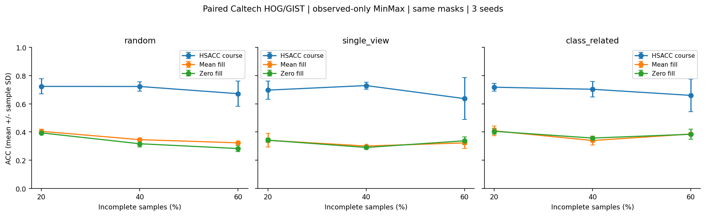
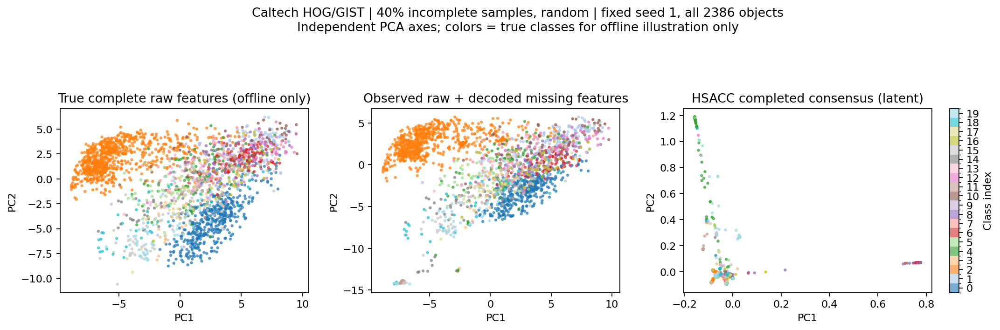
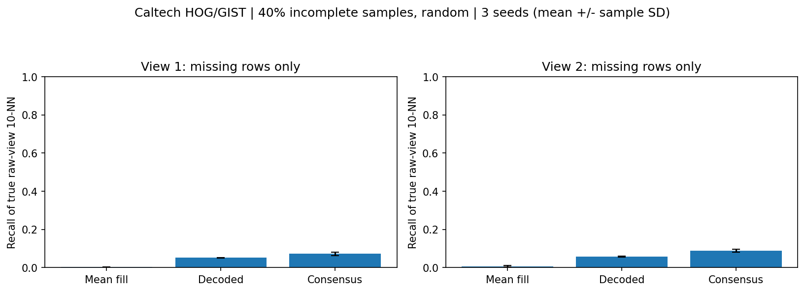
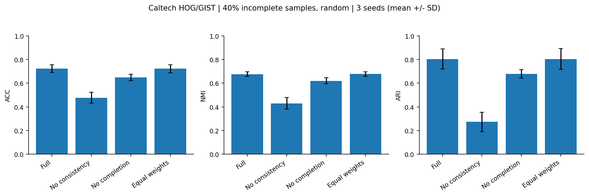
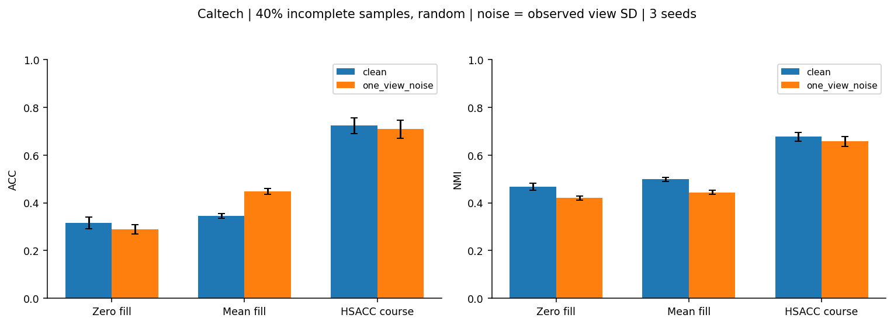
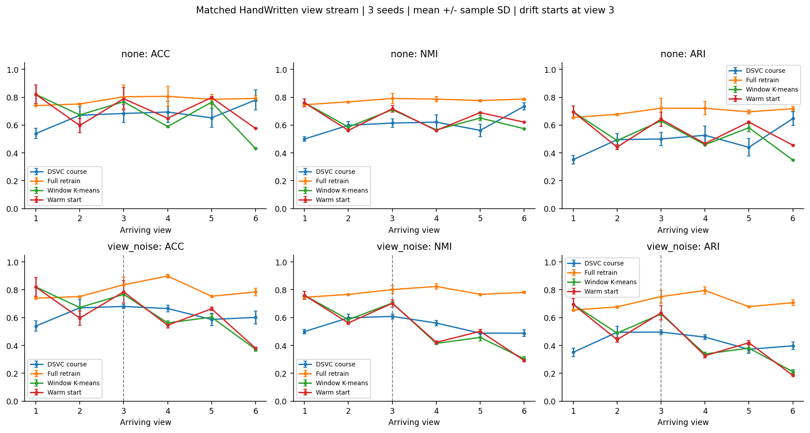
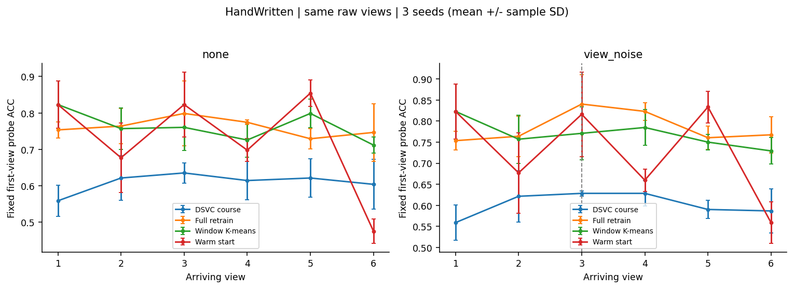
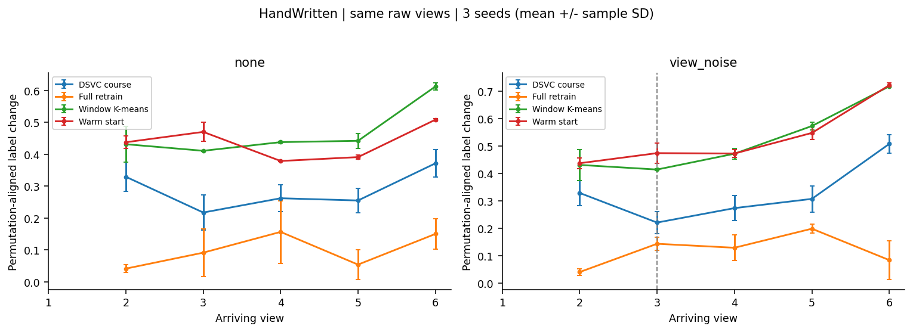
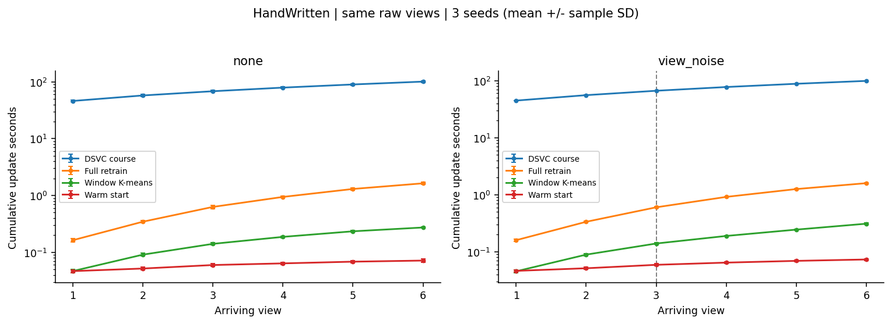
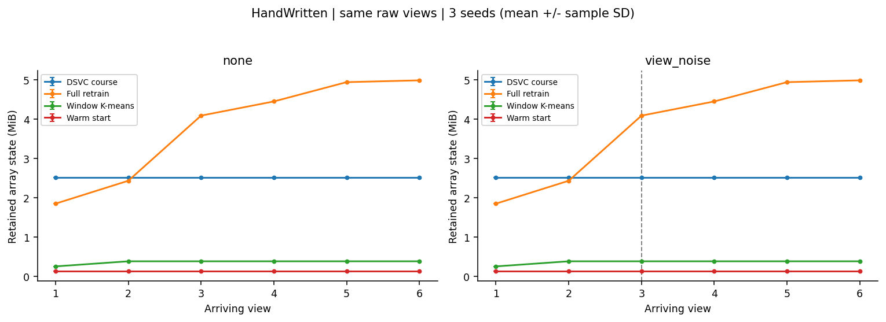

摘要
围绕整块视图缺失与视图逐批到达两个场景，建立共享数据处理、训练、评估和绘图模块。场景A采用Caltech101-20的HOG/GIST，三种缺失模式、三种不完整样本比例、三个随机种子，对比简单填充与HSACC表示学习；场景B采用HandWritten六视图流，在相同输入、历史约束和预先固定的90秒预算下，对比三个指定基线与DSVC课程适配。随机缺失下，相对均值填充的配对ACC收益为：20%时提高31.91±6.66个百分点、40%时提高37.76±3.28个百分点、60%时提高34.90±8.23个百分点。DSVC课程适配最终ACC在无漂移下为77.97 ± 7.26%，加噪下为60.13 ± 4.65%。同时报告补全误差、邻域保持、消融与隔离进程效率，区分作者代码试验和课程适配。结论仅适用于选定数据与配置，三个种子的结果为描述统计。
关键词：不完整多视图聚类；视图流；协作补全；原型摘要；概念漂移；可复现比较。
1. 问题定义与文献依据
场景A给定样本对齐的多视图特征与观测掩码M，目标是在不读取隐藏视图的条件下输出K个簇。场景B固定对象集合，第t批只开放新视图X(t)，在线学习器只能使用当前特征和有限历史摘要；全量重训练作为任务书允许的额外信息参考。
文献路线包括COMPLETER的信息一致性与预测、MIMB的双一致性与流形约束、HSACC的分层语义对齐，以及FDMVC的语义继承和DSVC的原型知识库。本文据此选择教师列出的HSACC、DSVC分别实现两个场景。完整综述、来源链接和教师条目逐项核验见文献综述与复现选择。教师第7条尚缺可靠原文，未冒充已核实文献。
这里的研究问题是：相同观测条件下学习表示能否稳定改善聚类；聚类收益能否解释为真实邻域恢复；有限摘要能否在漂移与预算约束下保留质量。本文不主张提出了超越既有论文的新算法。
2. 数据与信息边界
数据字典| 数据集 | 样本 | 视图 | 类别 | 各视图维度 |
|---|
| BBCSport | 544 | 2 | 5 | 3183 / 3203 |
| BBC4view | 685 | 4 | 5 | 4659 / 4633 / 4665 / 4684 |
| Caltech101-20 | 2386 | 6 | 20 | 48 / 40 / 254 / 1984 / 512 / 928 |
| NUS-WIDE子集 | 2400 | 5 | 12 | 64 / 144 / 73 / 128 / 225 |
| HandWritten（作者仓库） | 2000 | 6 | 10 | 240 / 76 / 216 / 47 / 64 / 6 |
前四个公开MAT文件的下载地址、大小和Git blob校验值见data/dataset_sources.json；HandWritten来自固定提交的DSVC仓库。保持各来源行顺序并核对视图行数、标签长度，原数据没有独立对象ID，未额外证明语义对应关系。BBC4view末尾有983字节附加内容，选择性读取X/y并保留源文件不变。
场景A只选HOG/GIST，维度1984/512，N=2386，K=20。标准化参数逐特征仅由已观测行估计，隐藏值只在训练结束后的误差诊断中读取。场景B为2000个对象、K=10，六视图按来源顺序开放，每个当前视图分别拟合MinMax，未来视图不参与变换。真实类别仅用于离线指标及类别相关缺失生成；K按基准类别数预设，不参与样本监督。
3. 算法与课程适配
填充基线：零填充或以观测行均值填充，拼接标准化的双视图后运行K-means。完整拼接与两个完整单视图另列参考，保留完整信息并不保证K-means的数值必然更高。
HSACC：使用固定提交的双自动编码器与跨视图推断网络。观测完整的样本对提供重构、跨视图对比/分布对齐与双向推断训练；先学习视图表示，再以另一视图的表示预测缺失表示。最终把两个完成后的128维表示拼接成256维共识，固定500轮后进行K-means。最后的拼接是作者实现中的实际聚类路径，不能描述成最终对潜变量进行自适应加权求和。
采用的训练目标可按实现概括为 L = 0.1 Lreconstruction + 10 Linstance + LMMD + 0.1 Ldual，其中双向推断项从索引100轮后加入；具体公式和系数以固定作者loss.py/model.py与保存配置为准。这一目标不同于任务书给出的可选简化公式，未宣称二者完全相同。
流式基线：warm-start在当前对齐表示上以旧中心初始化；滑动窗口保留最近两个16维表示批次；二者的预处理另维护一个N×16历史共识。PCA后补零到16维，通过对象对应关系进行无标签正交对齐。全量重训练保存已到达的全部标准化原始视图并重新拼接，属于额外信息参考。
DSVC课程适配：复用作者自动编码器、注意力与损失，固定对象组对应原型缓冲。只将原型缓冲、一个N×256的共识和中心传到下一批。推断使用已训练注意力并切换eval模式，当前表示经无标签正交对齐后，以α=0.5指数融合历史摘要，再用旧中心初始化聚类。模型更新函数不接收真实类别。
这相对作者入口改变了全局推断注意力、批次原型对应和历史融合，因此命名为dsvc_course。实验05保留作者代码路径，二者分别报告。N×D摘要对视图批数有界，但随对象数N线性增长，不能称为常数内存或任意样本流算法。
4. 冻结协议与评价
A：r∈{20%,40%,60%}定义为不完整样本比例，删除floor(Nr)个样本各一个完整视图，保证每个对象至少有一个视图；双视图块缺失比例约为r/2。随机模式均匀选择失去的视图；集中模式均删除第一个视图；类别相关模式按类别加权选择对象，失去视图由类别索引取模决定。每个方法共享掩码SHA-256，种子1/2/3，不在看到指标后调参。
B：六个时间批，种子11/21/22；从第3批（T/2）起对新到达视图加入一个该特征标准差尺度的高斯噪声，尺度来自当前视图，对所有方法保持相同。无漂移与加噪条件配对，逐视图原始输入哈希核对。每批90秒预算在主实验前根据此前作者试运行的硬件耗时校准并冻结，超时照实记录，不以结果修改阈值。
ACC使用匈牙利最优匹配；NMI/ARI直接计算，二者本身对簇编号置换不变。结果为三个种子的均值±样本标准差（ddof=1），百分制表格中的标准差为百分点。标签变化先消除编号置换。Silhouette与10-NN保持率辅助解释，不替代主指标。
历史探针为首视图固定抽取的96个对象旧表示，只由评估器保存，模型不得访问探针进行更新。遗忘量为首批探针ACC减当前旧表示查询ACC，可为负，意味着查询改善。ACC在每次探针集合上重新做标签匹配，小样本解释须谨慎。全量参考的旧探针是首视图原始特征后补零，其他方法是固定对齐空间；因此这一指标的跨方法语义并非完全一致，同时报告当前质量、标签变化和状态规模。
恢复阈值为第2批ACC的90%。从第3批开始，未低于阈值记0；若低于则寻找后续首次达到阈值的批，记录其距离第3批的批数；到第6批仍未达到明确记未恢复。由于新增视图本身会改变质量，另报告相同种子的加噪减无漂移效果，不能把全部波动都归因于漂移。
5. 场景A：统一质量比较
Caltech HOG/GIST；相同掩码和预处理；各条件3个种子| 模式 | 不完整样本比例 | 方法 | ACC % | NMI % | ARI % |
|---|
| 类别相关缺失 | 20% | HSACC课程适配 | 71.81 ± 2.79 | 70.01 ± 0.50 | 78.57 ± 7.30 |
| 类别相关缺失 | 20% | 均值填充+K-means | 40.82 ± 3.45 | 55.32 ± 2.02 | 22.93 ± 2.63 |
| 类别相关缺失 | 20% | 零填充+K-means | 40.50 ± 1.96 | 56.95 ± 0.50 | 28.54 ± 1.50 |
| 类别相关缺失 | 40% | HSACC课程适配 | 70.34 ± 5.48 | 67.46 ± 3.31 | 75.01 ± 11.89 |
| 类别相关缺失 | 40% | 均值填充+K-means | 33.95 ± 3.21 | 49.62 ± 0.64 | 15.25 ± 1.90 |
| 类别相关缺失 | 40% | 零填充+K-means | 35.69 ± 0.34 | 52.96 ± 0.06 | 20.92 ± 0.69 |
| 类别相关缺失 | 60% | HSACC课程适配 | 66.00 ± 11.58 | 66.90 ± 4.15 | 70.15 ± 17.62 |
| 类别相关缺失 | 60% | 均值填充+K-means | 38.56 ± 1.09 | 48.01 ± 1.46 | 17.88 ± 0.36 |
| 类别相关缺失 | 60% | 零填充+K-means | 38.38 ± 3.61 | 52.70 ± 1.43 | 22.18 ± 1.22 |
| 随机缺失 | 20% | HSACC课程适配 | 72.38 ± 5.39 | 69.58 ± 2.06 | 78.07 ± 9.68 |
| 随机缺失 | 20% | 均值填充+K-means | 40.47 ± 1.47 | 56.64 ± 0.34 | 27.38 ± 2.34 |
| 随机缺失 | 20% | 零填充+K-means | 39.37 ± 0.72 | 55.36 ± 1.25 | 27.16 ± 1.27 |
| 随机缺失 | 40% | HSACC课程适配 | 72.31 ± 3.34 | 67.68 ± 1.87 | 80.46 ± 8.57 |
| 随机缺失 | 40% | 均值填充+K-means | 34.55 ± 0.93 | 49.89 ± 0.85 | 16.54 ± 2.41 |
| 随机缺失 | 40% | 零填充+K-means | 31.64 ± 2.42 | 46.73 ± 1.53 | 19.46 ± 1.56 |
| 随机缺失 | 60% | HSACC课程适配 | 67.20 ± 8.91 | 65.90 ± 3.94 | 75.92 ± 10.78 |
| 随机缺失 | 60% | 均值填充+K-means | 32.30 ± 0.76 | 44.53 ± 0.67 | 13.17 ± 1.92 |
| 随机缺失 | 60% | 零填充+K-means | 28.25 ± 2.16 | 42.09 ± 1.28 | 14.95 ± 1.84 |
| 单视图集中缺失 | 20% | HSACC课程适配 | 69.73 ± 6.56 | 68.84 ± 2.08 | 75.25 ± 10.16 |
| 单视图集中缺失 | 20% | 均值填充+K-means | 34.10 ± 4.78 | 48.90 ± 2.30 | 14.91 ± 5.26 |
| 单视图集中缺失 | 20% | 零填充+K-means | 34.20 ± 1.48 | 51.26 ± 1.19 | 19.17 ± 0.96 |
| 单视图集中缺失 | 40% | HSACC课程适配 | 72.97 ± 2.45 | 68.87 ± 0.71 | 82.27 ± 8.20 |
| 单视图集中缺失 | 40% | 均值填充+K-means | 30.02 ± 0.16 | 39.87 ± 0.95 | 10.86 ± 1.07 |
| 单视图集中缺失 | 40% | 零填充+K-means | 29.02 ± 1.08 | 41.60 ± 1.79 | 14.80 ± 2.26 |
| 单视图集中缺失 | 60% | HSACC课程适配 | 63.70 ± 14.84 | 64.71 ± 5.97 | 66.19 ± 19.23 |
| 单视图集中缺失 | 60% | 均值填充+K-means | 32.27 ± 4.11 | 38.76 ± 2.58 | 16.55 ± 4.40 |
| 单视图集中缺失 | 60% | 零填充+K-means | 33.75 ± 2.63 | 36.19 ± 3.32 | 13.17 ± 6.33 |
预先指定以均值填充作配对控制。随机模式三个比例的每个种子均为正收益，满足任务书“至少两种缺失率稳定改进”的本地描述性标准。收益为20%时提高31.91±6.66个百分点、40%时提高37.76±3.28个百分点、60%时提高34.90±8.23个百分点。这不是对总体分布的显著性检验，也不意味着每个未测试的数据集都会提高。完整配对收益和正收益种子数见scenario_a_paired_gains.csv。

图1：三种缺失模式的ACC曲线；3种子均值±样本标准差。类别相关缺失同时改变观测概率与缺失方向，更接近非随机缺失；它不等同于真实业务数据中的全部选择偏差。高缺失比例也减少用于跨视图训练的完整样本，故需结合种子波动分析，不能把单次较高结果概括为缺失无害。
6. 完整信息参考与补全误差
相同Caltech HOG/GIST；使用全部特征；3种子| 完整数据参考 | ACC % | NMI % | ARI % |
|---|
| concat_complete | 45.50 ± 3.45 | 64.01 ± 1.01 | 36.66 ± 2.39 |
| single_complete_v1 | 45.60 ± 1.45 | 63.39 ± 0.58 | 35.39 ± 0.83 |
| single_complete_v2 | 41.24 ± 1.45 | 56.64 ± 0.82 | 34.04 ± 1.75 |
完整原始特征K-means同时受到特征尺度、非线性结构和聚类初始化限制；HSACC学习了不同表示，因此超过此参考不能推导成模型恢复了超过真实数据的信息。
40%随机不完整样本；真实标准化原始视图作邻域参照；3种子| 视图 | 方案 | 缺失行10-NN保持率 % | 全部行保持率 % | 缺失特征MSE |
|---|
| 1 | 解码补全 | 5.19 ± 0.13 | 22.07 ± 1.95 | 0.06186 ± 0.00532 |
| 1 | 均值填充 | 0.39 ± 0.09 | 43.18 ± 1.20 | 0.06333 ± 0.00026 |
| 2 | 解码补全 | 5.83 ± 0.29 | 32.10 ± 1.06 | 0.01949 ± 0.00065 |
| 2 | 均值填充 | 0.65 ± 0.37 | 55.53 ± 1.12 | 0.02164 ± 0.00037 |
这里将补全潜变量送入训练后的解码器，仅作为离线诊断，不改变聚类路径。观测原始行保持不变，缺失行由解码结果代入；均值填充共享同一标准化参数。解码补全的缺失行邻域保持率高于均值填充，但绝对保持率仍低。全部行保持率反而可能低于均值填充，表明重建误差与聚类判别信息并非同一目标。真实特征的局部结构不能由较高ACC自动担保。

图2：固定种子1的真实特征、补全特征与共识表示PCA。全部2386个对象；各图独立PCA坐标，颜色仅作离线类别说明。
图3：缺失行的真实原始视图10-NN保持率；3种子均值±标准差。二维投影仅供观察，不能比较不同图坐标距离或直接证明可分性。模型潜空间的真实编码/完成表示另见每次训练的neighborhood.json，本文图3特意使用更严格的原始特征几何作为参照。
6.1 辅助表示指标
40%随机不完整样本；每种子抽样256个对象；3种子| 方法 | Silhouette均值 ± 样本标准差 |
|---|
| HSACC课程适配 | 0.8625 ± 0.0157 |
| 均值填充+K-means | 0.0811 ± 0.0106 |
| 零填充+K-means | 0.1808 ± 0.0124 |
轮廓系数在每种方法自身的聚类表示空间中计算；零/均值填充为拼接特征，HSACC为256维潜空间。不同距离空间的分数不能直接当作统一物理单位的提升，也不代替对真实类别的ACC/NMI/ARI。
7. 消融与单视图噪声
40%随机不完整样本；固定500轮；3种子| 变体 | ACC % | NMI % | ARI % |
|---|
| 等权 | 72.24 ± 3.39 | 67.78 ± 1.93 | 80.35 ± 8.76 |
| 完整方法 | 72.31 ± 3.34 | 67.68 ± 1.87 | 80.46 ± 8.57 |
| 去补全 | 64.85 ± 2.66 | 62.06 ± 2.55 | 67.79 ± 3.51 |
| 去一致性 | 47.69 ± 4.63 | 42.98 ± 4.83 | 27.30 ± 8.22 |
消融均使用相同三个掩码与完整方法控制。等权相对完整方法-0.07个百分点；去补全相对完整方法-7.46个百分点；去一致性相对完整方法-24.62个百分点。三种子波动与训练随机性须一并考虑，不将均值差直接解释为显著因果效应。去一致性同时关闭实例对比与MMD系数；去补全关闭双向推断损失且缺失潜变量置零；等权替换训练权重函数。关闭损失不一定删除前向计算，所以不以消融时间声称计算加速。
双视图权重存在可辨识性限制：作者的相似度求和式可化为各视图批均值到H批均值的平方距离；H=(Z1+Z2)/2时，两距离相同，归一化后退化为等权。因而等权消融无法在该设置独立证实动态权重有用；浮点计算顺序引起的训练差异不能成为支持结论。验证一般自适应权重需要三视图以上或重新定义可靠性，这不属于本轮冻结实验。

图4：三类消融；同一数据、40%随机缺失、3种子误差线。第一个视图已观测行加噪；尺度只从观测行估计；无噪声控制复用06A| 方法 | 观测噪声条件 | ACC % | NMI % | ARI % |
|---|
| HSACC课程适配 | clean | 72.31 ± 3.34 | 67.68 ± 1.87 | 80.46 ± 8.57 |
| HSACC课程适配 | one_view_noise | 70.86 ± 3.80 | 65.68 ± 2.08 | 78.04 ± 9.06 |
| 均值填充+K-means | clean | 34.55 ± 0.93 | 49.89 ± 0.85 | 16.54 ± 2.41 |
| 均值填充+K-means | one_view_noise | 44.79 ± 1.16 | 44.41 ± 0.85 | 28.84 ± 0.59 |
| 零填充+K-means | clean | 31.64 ± 2.42 | 46.73 ± 1.53 | 19.46 ± 1.56 |
| 零填充+K-means | one_view_noise | 28.95 ± 1.91 | 42.04 ± 0.87 | 20.74 ± 0.84 |
同一方法、同一种子相减的噪声影响为：HSACC课程适配 -1.45±3.04个百分点；均值填充+K-means +10.24±0.64个百分点；零填充+K-means -2.70±4.21个百分点。噪声强度仅检验一个固定档位，不能据此声称对任意噪声鲁棒。
本次均值填充在加噪后ACC上升而NMI下降，说明噪声不一定让每个指标单调恶化。加噪后的MinMax范围和距离关系也会改变，ACC与NMI侧重的簇结构不同。该现象只能视为当前配置的结果，不能解读成“加噪通常有益”。

图5：无噪声与单视图高斯噪声比较；3种子均值±样本标准差。8. 场景B：质量、漂移与历史保留
HandWritten第6视图；3种子；遗忘负值表示旧查询改善| 条件 | 方法 | 最终ACC % | NMI % | ARI % | 旧探针ACC % | 遗忘量 pp |
|---|
| 无漂移 | DSVC课程适配 | 77.97 ± 7.26 | 73.44 ± 2.63 | 64.63 ± 4.93 | 60.42 ± 6.83 | -4.51 ± 3.01 |
| 无漂移 | 全量重训练参考 | 79.10 ± 2.12 | 78.68 ± 0.67 | 71.75 ± 1.67 | 74.65 ± 7.89 | 0.69 ± 5.74 |
| 无漂移 | 滑动窗口 | 43.15 ± 0.00 | 57.38 ± 0.04 | 34.88 ± 0.01 | 71.18 ± 2.17 | 11.11 ± 4.34 |
| 无漂移 | warm-start | 57.60 ± 0.00 | 62.07 ± 0.00 | 45.52 ± 0.00 | 47.57 ± 3.35 | 34.72 ± 3.18 |
| 视图加噪 | DSVC课程适配 | 60.13 ± 4.65 | 48.76 ± 2.33 | 39.73 ± 2.71 | 58.68 ± 5.24 | -2.78 ± 8.74 |
| 视图加噪 | 全量重训练参考 | 78.40 ± 2.77 | 78.11 ± 0.65 | 70.74 ± 2.13 | 76.74 ± 4.34 | -1.39 ± 2.17 |
| 视图加噪 | 滑动窗口 | 37.28 ± 1.45 | 30.37 ± 1.56 | 21.12 ± 1.40 | 72.92 ± 3.12 | 9.37 ± 7.86 |
| 视图加噪 | warm-start | 38.03 ± 0.78 | 29.23 ± 0.55 | 18.48 ± 0.33 | 55.90 ± 4.92 | 26.39 ± 6.01 |

图6：六批视图流ACC/NMI/ARI；虚线为第3批噪声开始；3种子误差线。末批DSVC课程适配相对全量重训练参考，在无漂移下差-1.13个百分点，加噪下差-18.27个百分点；自身加噪相对无漂移下降17.83个百分点。它在末批优于本次低维warm-start和滑动窗口，但并未达到全量参考，也没有证明消除了漂移影响。可能原因包括有限原型和固定遗忘丢失判别信息、噪声进入无监督知识指导、后续视图的信息量差异；这些是与结构一致的解释，尚无额外消融把它们逐一确认为原因。
不同到达视图的判别力和维度不同，所以无漂移曲线也可能下降。比较不能只看末批或某个有利视图。噪声的配对影响表scenario_b_noise_effect.csv用相同种子、方法、批次相减；这有助于将视图顺序影响与人为噪声影响区分，但不提供真实环境漂移的外推保证。

图7：固定首视图探针的历史查询ACC；不同方法的旧表示查询语义见协议限制。
图8：匹配簇编号后的对象标签变化率；第一批无前序值，留空。高稳定性可能只是中心不再变化，不能单独代表聚类质量。DSVC课程适配必须同时评估其当前ACC、旧探针查询和标签变化；全量原始拼接与低维共识的查询空间不同，不宜用单一探针排名宣称某种遗忘机制普遍更好。
恢复阈值为第2批ACC的90%；下降可为负，表示后续最低点仍高于漂移前| 方法 | 种子 | 漂移前ACC % | 最大下降 pp | 是否恢复 | 从第3批到恢复的批数 |
|---|
| DSVC课程适配 | 11 | 69.85 | 13.65 | 未恢复 | 截至第6批未恢复 |
| DSVC课程适配 | 21 | 59.95 | 3.85 | 是 | 0 |
| DSVC课程适配 | 22 | 71.20 | 7.45 | 是 | 3 |
| 全量重训练参考 | 11 | 75.45 | 0.05 | 是 | 0 |
| 全量重训练参考 | 21 | 74.40 | -0.80 | 是 | 0 |
| 全量重训练参考 | 22 | 75.55 | 0.10 | 是 | 0 |
| 滑动窗口 | 11 | 67.50 | 28.65 | 未恢复 | 截至第6批未恢复 |
| 滑动窗口 | 21 | 67.05 | 31.05 | 未恢复 | 截至第6批未恢复 |
| 滑动窗口 | 22 | 67.20 | 30.20 | 是 | 2 |
| warm-start | 11 | 64.70 | 26.05 | 是 | 2 |
| warm-start | 21 | 59.70 | 21.40 | 是 | 2 |
| warm-start | 22 | 54.55 | 17.40 | 未恢复 | 截至第6批未恢复 |
9. 效率与预算
A：40%随机不完整样本；每方法每种子一个新进程；这些重跑不增加质量表种子数| 方法 | A算法时间 s | 进程峰值 MiB | GPU分配峰值 MiB | ACC % |
|---|
| hsacc | 42.20 ± 0.20 | 1719.21 ± 3.08 | 967.51 ± 0.00 | 72.31 ± 3.34 |
| mean | 2.60 ± 0.09 | 284.63 ± 0.06 | 0.00 ± 0.00 | 34.55 ± 0.93 |
| zero | 2.49 ± 0.06 | 284.62 ± 0.14 | 0.00 ± 0.00 | 31.64 ± 2.42 |
B：各完整六视图病例分别隔离进程；3种子| 条件 | 方法 | B累计更新 s | 进程峰值 MiB | 末批GPU峰值 MiB | 末批保留数组 MiB |
|---|
| 无漂移 | DSVC课程适配 | 100.90 ± 3.20 | 1780.17 ± 0.74 | 106.68 ± 0.00 | 2.517 ± 0.000 |
| 无漂移 | 全量重训练参考 | 1.64 ± 0.07 | 175.80 ± 0.04 | 0.00 ± 0.00 | 4.984 ± 0.000 |
| 无漂移 | 滑动窗口 | 0.27 ± 0.01 | 154.48 ± 0.80 | 0.00 ± 0.00 | 0.382 ± 0.000 |
| 无漂移 | warm-start | 0.07 ± 0.00 | 153.95 ± 0.28 | 0.00 ± 0.00 | 0.130 ± 0.000 |
| 视图加噪 | DSVC课程适配 | 99.03 ± 0.20 | 1762.96 ± 29.69 | 106.68 ± 0.00 | 2.517 ± 0.000 |
| 视图加噪 | 全量重训练参考 | 1.60 ± 0.05 | 176.79 ± 0.16 | 0.00 ± 0.00 | 4.984 ± 0.000 |
| 视图加噪 | 滑动窗口 | 0.31 ± 0.01 | 157.25 ± 0.19 | 0.00 ± 0.00 | 0.382 ± 0.000 |
| 视图加噪 | warm-start | 0.07 ± 0.00 | 157.10 ± 0.23 | 0.00 ± 0.00 | 0.130 ± 0.000 |
全部B记录中预算超限为0次；DSVC课程适配的最大单批耗时为47.42秒，相对预先固定的90秒阈值如实判定。预算是运行硬件上的实测约束，迁移硬件后不能直接保证。六批全部单批时间见scenario_b_runs.csv。

图9：累计更新时间，对数纵轴；同一输入、3种子误差线。
图10：跨视图保留数组状态；不含解释器、临时网络和共享数据。计时范围：A基线含预处理与聚类；HSACC含预处理、作者训练中的周期评估和最终聚类，不含后续误差分析。B含当前MinMax、表示学习和更新，不含离线质量指标与文件保存。数据装载和进程启动不计入更新时间，但包含在原生进程生命周期峰值内。A的深度方法用GPU，基线用CPU，比较反映当前部署成本，不能解释为相同硬件纯训练内核的加速比。
进程峰值来自Windows原生PeakWorkingSetSize，包括依赖、原始数据与初始化；GPU字段是torch分配峰值，不是显卡总显存占用。表中B的GPU值是末批重置计数的峰值，完整运行的最大GPU峰值可从逐批CSV取最大值。保留数组规模只计摘要、原型、中心等，不是整个进程内存。
本实验以静态MAT文件模拟流：外层驱动器装载全部视图，学习器update接口只获得当前视图，未来特征不传入学习器。进程峰值因此包含驱动器装载开销，不能用它证明真实数据采集系统的端到端流式存储上界。独立进程也不等于整台机器完全空闲，耗时是本机运行记录，未作多硬件基准测试。
10. 环境、复现与结果核验
| 配置项 | 值 |
|---|
| A：编码器 | 1984/512 → 1024 → 1024 → 1024 → 128；ReLU/BatchNorm；末层Softmax |
| A：推断器 | 128 → 256 → 128 |
| A：训练 | Adam lr=1e-4，batch=256，固定500轮；最终轮评价，不挑最好一轮 |
| K-means | K固定；n_init=10，max_iter=300，tol=1e-4；warm-start时以旧中心作唯一初始化 |
| B：DSVC | 200轮/视图，feature=256，prototype=70，batch=256，Adam lr=1e-4，beta1=1，beta2=0.1 |
| B：历史 | 滑动窗口2批；基线PCA=16；共识EMA α=0.5；固定96个离线历史探针 |
| 停止条件 | 固定轮数；K-means达到tol或300轮；非有限损失立即报错；预算超时记录，不事后提高阈值 |
| 运行环境 | 实际值 |
|---|
| Python | 3.10.20 |
| 系统 | Windows-10-10.0.26200-SP0 |
| CPU | AMD64 Family 26 Model 68 Stepping 0, AuthenticAMD |
| 逻辑CPU数 | 16 |
| GPU | NVIDIA GeForce RTX 5070, 12227 MiB, 610.88 |
| numpy | 2.2.6 |
| scipy | 1.15.3 |
| scikit-learn | 1.7.1 |
| matplotlib | 3.10.9 |
| pandas | 2.3.3 |
| torch | 2.11.0+cu128 |
| threadpoolctl | 3.5.0 |
原始实验01—03来自此前Python3.12环境，仅作历史基线资料。课程06/07在同一已有Micro环境中重新运行可比基线与深度方法，避免把不同版本结果混入主比较。未重新安装PyTorch，临时文件与缓存均由启动器重定向到D盘项目.cache。
核验通过：A质量记录81条，B批次记录144条；消融表含12条（含复用完整方法），鲁棒性表含18条（含复用无噪声控制），A独立效率9个病例。另有9条完整信息参考。合计252条课程预测记录已由保存标签重新计算ACC/NMI/ARI，绝对误差阈值1e-12，不能把复用控制或效率重跑当成额外独立样本。
配置、日志和CSV位于各实验目录；最终标签、掩码、模型权重保存在本地输出。公共course_predictions.jsonl.gz只含真实标签、预测标签与条件标识，供离线核验；不含原始特征、潜变量或模型权重。数据与作者源码按固定地址下载，不随仓库复制。
python scripts/run_in_environment.py experiments/06_course_comparison/run.py --stage all
python scripts/run_in_environment.py -- -m evaluation.course_geometry
python scripts/run_in_environment.py -- -m evaluation.build_course_analysis
python scripts/run_in_environment.py -- -m evaluation.verify_course_outputs
python scripts/run_in_environment.py -- -m evaluation.build_report
python scripts/run_in_environment.py scripts/validate_repository.py --include-paper-results --include-course-results
python scripts/run_in_environment.py -- -m unittest discover -s tests -v
11. 作者协议试验与复现边界
实验04/05保留固定作者提交，分别完成单数据集与单配置的完整训练预算。HSACC作者掩码参数0.5实际约12.5%视图块缺失，不是50%；标准化也不同于课程协议。DSVC作者入口含与课程适配不同的推断路径。作者试验结果不能混入课程公平对比。
固定最终轮/最终视图；不以作者周期最好指标替代主结果| 作者代码试验 | 本地最终ACC % | 范围 |
|---|
| HSACC | 71.88 ± 8.26 | Caltech HOG/GIST；500轮；种子1/2/3；作者模型初始化规则 |
| DSVC | 83.53 ± 11.06 | HandWritten；6视图；每视图200轮；种子11/21/22 |
上述数字来自本地实际运行，不是引用原论文表格；它们不构成两篇论文全部数据集、消融和参数表的完整复现。可追溯固定提交见THIRD_PARTY.md；兼容适配与课程变更在各README注明。
12. 结论与限制
在本次Caltech双视图的冻结协议中，HSACC表示学习相对均值填充在三个随机缺失比例均出现三种子配对正收益；邻域诊断同时显示，补全远未还原真实特征几何。双视图权重退化也限制了等权消融的解释。视图流实验提供同一输入与时间预算下的质量、状态和历史查询证据，性能与稳定性需结合看待。
结果限于两个主数据设置、固定到达顺序和三个种子。K取自基准类别数，类别相关缺失为人工构造，噪声只检验一个强度；没有统计显著性结论。没有新增类别、异步到达、对象不对齐或真实在线传感器验证。历史摘要对视图数量有界但随N增长，时间预算依赖硬件，探针查询空间差异限制跨方法遗忘比较。
后续可以扩展三个以上视图检验权重、增加到达顺序及噪声强度、将对象级摘要压缩为簇级统计，并用独立划分评价表示迁移。按用户安排，PPT在实验、报告与代码核验后再制作；本报告不把尚未制作的PPT列为已交付。